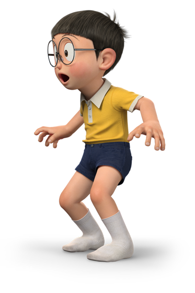
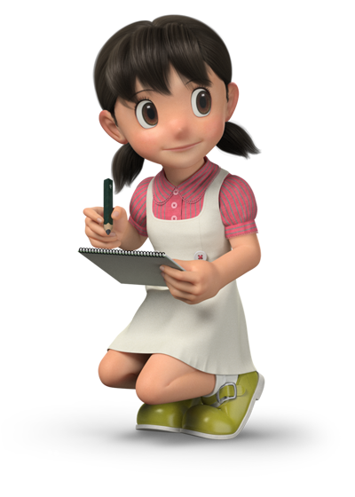

\ 哆 啦 A 夢 & FRIENDS /

多啦A夢ドラえもん
來自22世紀的機器貓,從未來被派來幫助大雄。口袋裡有各種神奇道具,是大家的萬能救星。怕老鼠,愛吃銅鑼燒。

野比大雄 のび太
成績差、運動差,但心地善良。有些懶惰、愛做白日夢,經常依賴多啦A夢的幫助。是整個故事的主角核心。

靜香 みなもと しずか
溫柔、聰明、彈鋼琴和洗澡是她的興趣。大雄暗戀的對象,未來也會與他結婚。常是團隊中的理性角色

小夫 スネ夫
炫富愛現,常拍馬屁胖虎,但也是團隊中重要一員。家境富裕、喜歡收集模型。偶爾也展現真誠的一面。

胖虎 ごうだ たけし
愛唱歌但五音不全,常欺負大雄,卻有義氣、會保護朋友。夢想成為歌手,性格粗魯但有正義感。
『如果有哆啦A夢在就好了』今天也這麼想著
2023年是藤子．F．不二雄老師誕生 90 週年的紀念 「THE 哆啦A夢展」從東京起跑,在日本巡迴 10 多個城市後，終於首度登上台灣。 村上隆x 奈良美智x 蜷川實花等28組國際知名藝術家重新定義哆啦...
更多內容更多資訊>>
Fujiko Pro.2025
100%哆啦A夢&FRIENDS巡迴特展 台北站 2025.6.28-.10.06 在華山！
PS.所有文字/圖片素材取自網路，僅供期末作業繳交用